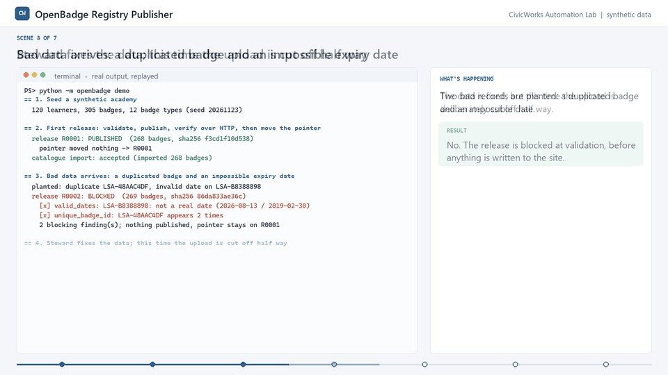
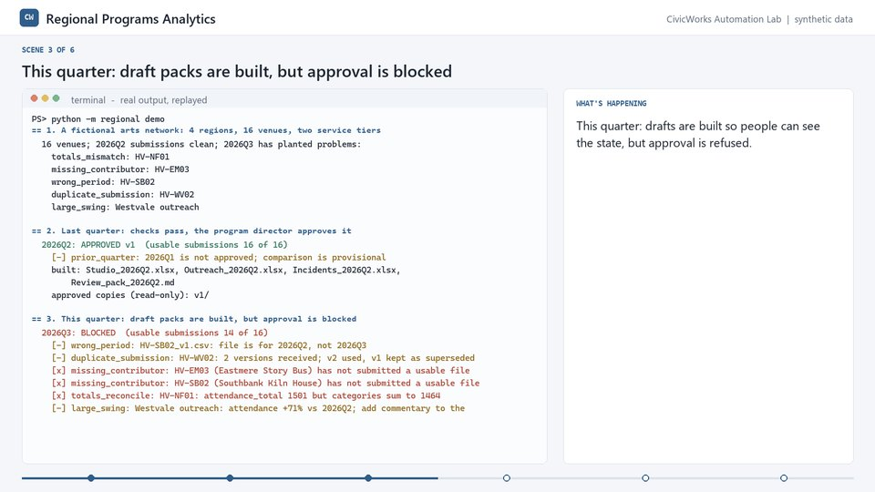
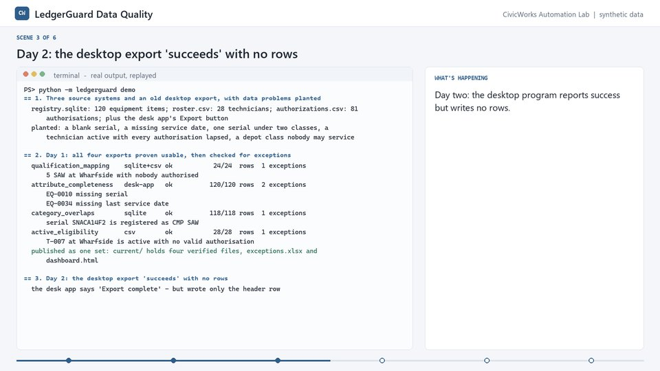
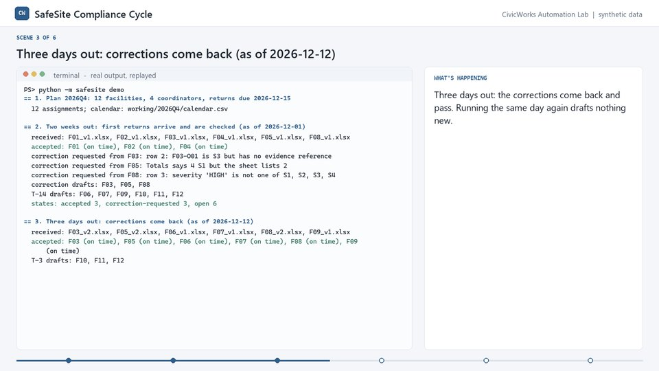
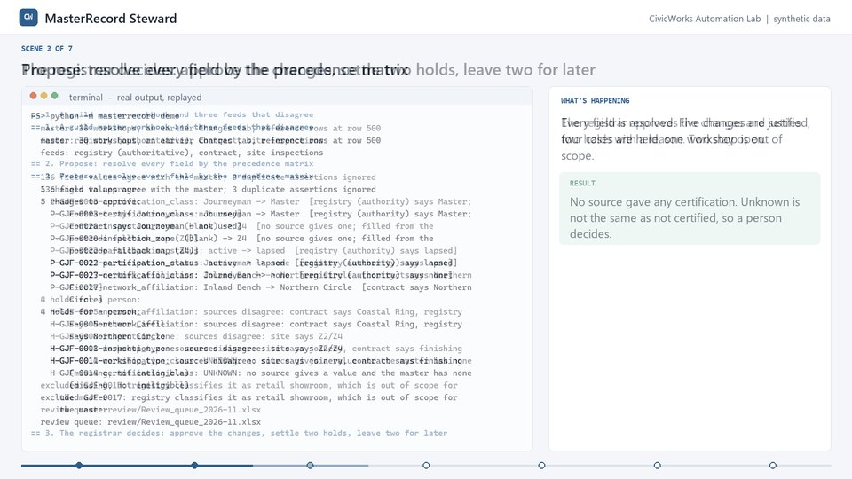

Reliable automation, from messy inputs to verified outputs.
Eight data pipelines for invented organisations. Each one takes data with planted problems, catches them, stops where a person has to decide, and leaves evidence of everything it did.
Each one shown running, with its real outputs

Atlas License Directory
A monthly printed directory that is checked, frozen, printed, verified and published - and can be rolled back.

OpenBadge Registry Publisher
A public data file that only goes live after it has been fetched back and proven identical.

Regional Programs Analytics
Quarterly Excel reports that refuse approval while the data is incomplete, and freeze once approved.

LedgerGuard Data Quality
Daily export checks that never mistake an empty file for success, with archives you can safely restore.

SafeSite Compliance Cycle
A quarterly safety-return cycle - reminders, checks, escalations and two Word reports - with nothing sent and no final overwritten.

MasterRecord Steward
Master records from three disagreeing sources - justified changes approved, the rest held for a person, nothing else touched.

ReconcileHub
Monthly access-roster reconciliation that suggests near-matches and never merges two people on a guess.

OpsPilot Control Center
One control room over the other pipelines - planned, checkpointed, approved by people, and unable to exceed its contracts.
How it fits together
Each pipeline stands alone with its own data, rules and tests. OpsPilot runs them as one operation through a fixed list of allowed actions, waits for people before anything is published, and resumes from verified checkpoints.
Where each skill is shown
| skill | Atlas | OpenBadge | Regional | LedgerGuard | SafeSite | MasterRecord | ReconcileHub | OpsPilot |
|---|---|---|---|---|---|---|---|---|
| Ingestion from several sources | ● | ● | ● | ● | ● | |||
| Schemas, keys and migrations | ● | ● | ● | ● | ● | ● | ● | ● |
| Data-quality rules that block | ● | ● | ● | ● | ● | |||
| Human approval gates | ● | ● | ● | ● | ● | ● | ||
| Versioned outputs and rollback | ● | ● | ● | ● | ● | |||
| Checkpoint and resume | ● | ● | ||||||
| Idempotent reruns | ● | ● | ● | ● | ● | |||
| Excel / Word / PDF / JSON outputs | ● | ● | ● | ● | ● | ● | ● | |
| Orchestration and safe agents | ● |
Nine ideas behind all eight
Every pipeline is a line of stations
Data goes in one end, passes stations in a fixed order - read it, clean it, check it, decide, build the output, check the output, release it, keep a copy - and comes out the other end. Each station does one job. When something goes wrong you know exactly which station caught it.
All the data is invented, on purpose, and repeatable
A generator program makes up every organisation, person and number from a starting number called a seed. Same seed, same data, byte for byte. It also plants specific mistakes so the checks have something real to catch, and the tests know exactly what should be caught.
Check before anything is used, and name the problem
Before data becomes an output, rules run over it. A blocking problem stops the run and says which record and why. An advisory problem is reported but does not stop it. Nothing is silently fixed or silently skipped.
The computer never guesses about what needs judgment
When two sources disagree and no rule settles it, or two names are almost the same, the pipeline holds the case and asks a named person. Their decision, with their role and reason, is recorded. Anything that is published also waits for a named approval.
Nothing good is ever overwritten
Releases, approved reports and snapshots are versioned. A new version is written next to the old one, never on top of it. A second approval of the same thing changes nothing; a real revision becomes version 2 with a reason.
Running it twice is safe
Every pipeline can be run again on the same inputs without duplicating anything: the same reminder is not drafted twice, the same decision is not applied twice, the same roster is not approved twice.
Fingerprints prove what happened
Every important file gets a SHA-256 fingerprint. Manifests list inputs and outputs with their fingerprints. A restore or rollback first re-checks the fingerprints; if a file has changed, it refuses.
Release all at once, or not at all
Outputs are built and checked in a staging area first. Releasing them is one quick swap - a rename or a pointer change - so readers see the whole new version or the whole old one, never half of each.
Every claim has a test, and every run leaves evidence
Each behaviour described in a README is checked by an automated test, and GitHub runs all the tests on fresh Linux and Windows machines after every change. Every run writes a manifest and readable reports.
How this was built
I used an AI coding assistant to write most of the code and documentation. I decided what each pipeline had to do, which mistakes it had to catch, where a person must approve, and what the tests must prove, and I reviewed the results. Every behaviour I describe has a test that anyone can run.